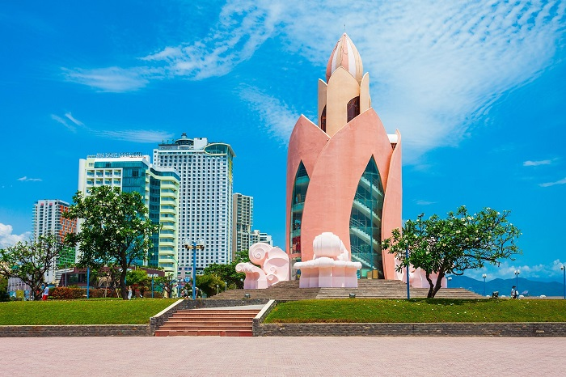
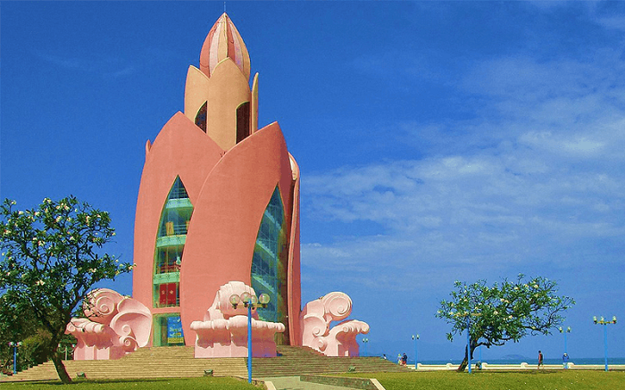

Tháp Trầm Hương Nha Trang - “Búp măng hồng” giữa lòng phố biển
Tháp Trầm Hương - Điểm đến không thể bỏ lỡ trong hành trình du lịch Nha Trangn
Vi tri:
Tháp Trầm Hương là biểu tượng của Nha Trang, góp phần quảng bá hình ảnh của thành phố biển đến với du khách trong và ngoài nước. Công trình là điểm nhấn đặc sắc với tông cam, hồng chủ đạo và kiến trúc mô phỏng dáng hình đóa sen tuyệt đẹp.
 Công trình tháp Trầm Hương tọa lạc tại quảng trường 2/4, đường Trần Phú
Lich su hinh thanh:
Năm 2004, tỉnh Ủy Khánh Hòa cho xây dựng biểu tượng Nha Trang với “Công trình nghệ thuật Hoa Biển”. Trải qua nhiều “biến cố”, tòa tháp được đưa vào hoạt động từ ngày 22/12/2008 với tên chính thức “Tháp Trầm Hương” và trở thành điểm nhấn quan trọng của thành phố và chào đón rất nhiều lượt khách tham quan với những đánh giá tích cực.
 Tháp Trầm Hương là điểm nhấn quan trọng của thành phố biển